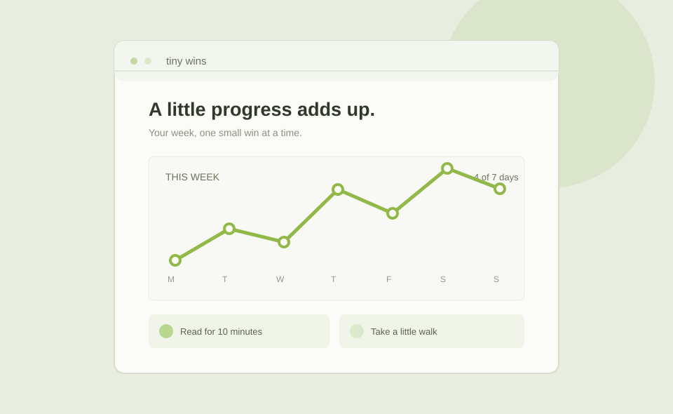
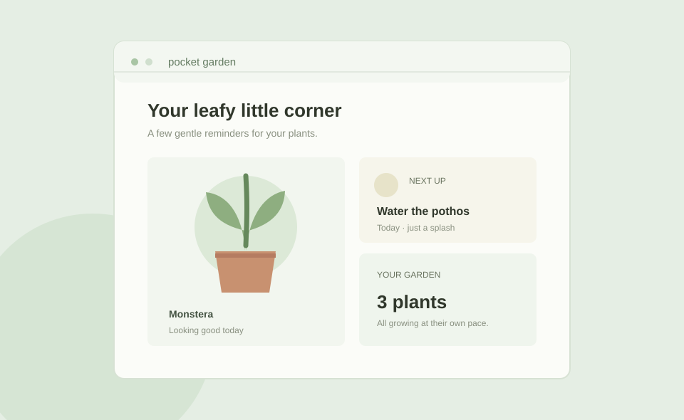

01 / PRODUCTIVITYTiny Wins
2026A little habit tracker that celebrates showing up, not being perfect.
Peek at the code
const streak = days.filter(
(day) => day.completed
).length;INDEPENDENT DEVELOPER & CURIOUS HUMAN
Hey, I’m Alex. I build small, thoughtful things for the web and share what I learn along the way.
Take a look aroundA FEW THINGS I’VE MADE
A work in progress, just like me.

01 / PRODUCTIVITYA little habit tracker that celebrates showing up, not being perfect.
const streak = days.filter(
(day) => day.completed
).length;
02 / JUST FOR FUNA friendly reminder app for keeping houseplants happy and hydrated.
View the projectA LITTLE ABOUT ME
I like turning curious questions into useful little projects. When I’m not at my keyboard, you’ll find me collecting ideas, learning something new, or taking the long way home.
Let’s make something